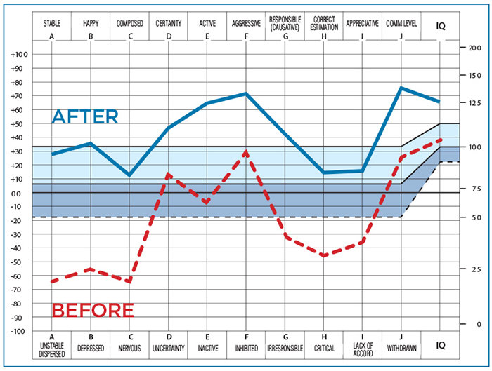
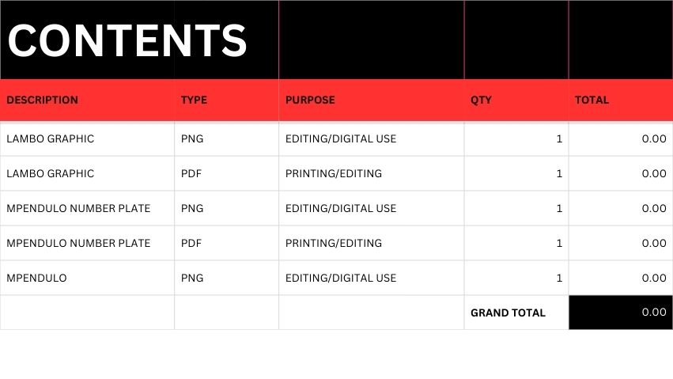

Digitizing community organisations using open‑source technology
Image 1

Image 2

Image 3
UmkhomaHUB is an initiative focused on helping small businesses, informal traders, entrepreneurs, NGOs and NPOs transition into the digital world. The project supports grassroots organisations by introducing affordable and powerful open‑source software solutions that improve administration, communication, financial management and service delivery.
Through digitization, organisations are able to streamline their operations, reduce costs, improve transparency and reach more people. UmkhomaHUB promotes sustainable digital development by making modern technology accessible to communities that traditionally lack access to enterprise software tools.
The goal is to empower local enterprises and community organisations to grow, collaborate and operate efficiently using free and open technology platforms.